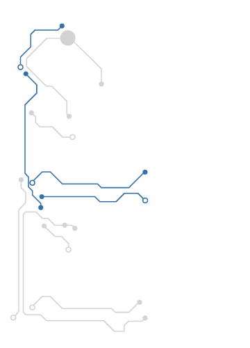

Ca profesioniști, cu toții ne dorim să identificăm modificările legislative rapid și să evităm erorile. Dacă până acum această activitate consuma timp și resurse, azi ne putem baza pe softul Lege5 pentru această sarcină.
Având un motor de căutare performant, Lege5 procesează informația și oferă rezultate exacte la nivel de paragraf în câteva secunde. O performanță, dacă ținem cont de faptul că softul conţine o bază de date complexă: atât legislația românească și europeană, cât și jurisprudența românească și europeană.
Lege5 a fost gândit pentru oameni activi și mobili. De aceea, am creat variante care se potrivesc oricărui device şi stil de lucru. Testează Lege5 şi descoperă funcţii performante de comparare text şi evidenţiere modificări!

Lege5 Online
Cel mai performant instrument de informare legislativă, se poate utiliza acum şi în Cloud, oriunde şi oricând. Aveţi nevoie doar de un calculator conectat la internet şi de un cont de acces la Lege5 Online.
Lege5 Cloud se adresează profesioniștilor care doresc să lucreze cu funcții specifice versiunilor desktop dar care nu doresc să instaleze pe staţia de lucru o bază de date.
Procesor: procesor compatibil Core 2 Duo sau mai rapid; minim: 2 GHz, recomandat: 2,4 GHz sau mai rapid
Memorie RAM: minim: 1 GB; recomandat: 2 GB sau mai mult
Spaţiu pe hard-disk: minim 200 MB disponibili
Alte cerinţe hardware: conexiune internet stabilă (viteză minim 5 Mbit/sec)
Cheie Hardware (USB) primită la achiziţionarea produsului
Cerinţe software:
Sistem de operare: Microsoft - Windows XP SP3, Windows Vista SP2, Windows 7 / 8;
Alte cerinţe software: Microsoft Internet Explorer 7 (sau versiuni mai noi).
calculatorul client trebuie să aibă acces la lege5cloud.indaco.ro prin protocol TCP/IP pe portul 6002 şi pe portul 5005 pentru www.indaco.ro.
Cerinţe hardware:
Procesor: procesor compatibil Core 2 Duo sau mai rapid; minim: 2 GHz, recomandat: 2,4 GHz sau mai rapid
Memorie RAM: minim: 2 GB; recomandat: 4 GB sau mai mult
Spaţiu pe hard-disk: minim 20 GB disponibili
Tip hard-disk: minim 5400/7200 RPM recomandat SSD
Alte cerinţe hardware: conexiune internet stabilă (pentru actualizarea produsului)
Cheie Hardware (USB) primită la achiziţionarea produsului
Cerinţe software:
Sistem de operare: Windows XP, Windows 7 / 8
Alte cerinţe software: Microsoft Internet Explorer 7 (sau versiuni mai noi) sau alt browser modern
La achiziționarea produsului, clienții primesc o cheie USB, necesară la instalarea, activarea și utilizarea Lege5:
Simpla conexiune la internet și cheia USB reprezintă necesarul minim pentru utilizarea acestei soluții cloud oricând și oriunde.
Cheia USB securizează fluxul informatic realizat la utilizarea soluției Lege5 Cloud. Atât datele de contact și alte informații confidentiale, cât și setările personalizate pe care le veți efectua, sunt ÎN SIGURANȚĂ pe server-ul Indaco.


{kind=link}
{kind=link}
{kind=link}
{kind=link}
{kind=link}
{kind=link}
{kind=link}
{kind=link}